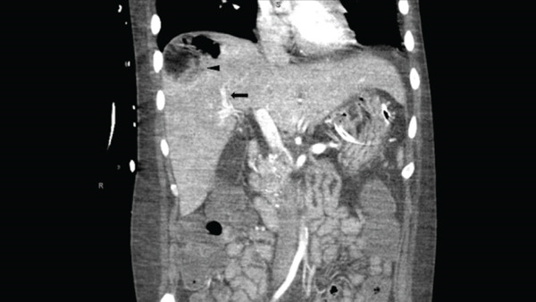

Ficha del catálogo
Absceso hepático piógeno
- Sistema
- Digestivo
- Modalidad
- TC
- Región
- Hígado
- Dificultad
- Intermedio
Es una colección de material purulento dentro del parénquima hepático, generada por diseminación biliar, por vía portal desde un foco abdominal, por vía arterial en la sepsis o tras un traumatismo o un procedimiento. Cursa con fiebre, dolor en el hipocondrio derecho, elevación de reactantes y a veces ictericia. Su tratamiento combina antibiótico y drenaje.
Técnica
La tomografía con medio de contraste intravenoso es el estudio más utilizado por su rapidez y por su capacidad de mostrar el foco de origen en el abdomen. El ultrasonido sirve como primera aproximación y es la guía habitual del drenaje percutáneo. La resonancia con difusión es útil para confirmar la naturaleza purulenta del contenido cuando existe duda con una lesión tumoral necrosada.
Qué observar
- Lesión hipodensa de contornos irregulares con realce periférico en anillo
- Halo de edema perilesional hipodenso, que junto al anillo produce el aspecto de doble diana
- Agrupación de pequeñas lesiones que confluyen, patrón en racimo característico de la fase inicial
- Gas en el interior de la colección, hallazgo muy sugerente en ausencia de instrumentación previa
- Realce transitorio del parénquima hepático adyacente por hiperemia
- Foco de origen en el abdomen, con atención a la vía biliar, al apéndice y al colon
Hallazgos
La lesión típica es una colección hipodensa con pared gruesa que realza y con edema alrededor, a veces tabicada. El patrón en racimo, en el que varias colecciones pequeñas se agrupan y coalescen, es muy sugerente. En resonancia el contenido es hiperintenso en T2, hipointenso en T1 y muestra restricción marcada en difusión, mientras que la pared realza tras el contraste. La trombosis de una rama portal adyacente con inflamación periportal debe hacer buscar una pileflebitis originada en un foco apendicular o diverticular.
Perlas
El origen determina el número y la distribución. Los abscesos de causa biliar suelen ser múltiples y periductales, los de origen portal se localizan con más frecuencia en el lóbulo derecho, y el absceso solitario en un paciente sin foco evidente obliga a buscar una neoplasia colónica oculta. Ante un absceso amebiano el antecedente epidemiológico y la serología pesan más que la imagen, porque el aspecto puede ser indistinguible.
Diagnóstico diferencial
- Absceso amebiano
- Lesión única subcapsular en el lóbulo derecho con pared fina, en paciente con antecedente epidemiológico y serología positiva.
- Metástasis necrótica
- Pared más irregular y nodular, sin fiebre, con otras lesiones y tumor primario conocido.
- Quiste hepático complicado
- Pared fina con contenido denso por hemorragia y sin realce parietal grueso ni edema perilesional.
- Quiste hidatídico
- Vesículas hijas, membranas desprendidas y calcificación de la pared, con evolución crónica.
- Hepatocarcinoma necrosado
- Componente sólido con realce arterial y lavado, en un hígado con hepatopatía crónica.
Simuladores
- Área de perfusión alterada por congestión o por cortocircuito arterioportal
- Biloma o colección postquirúrgica sin infección
- Infarto hepático con zona hipodensa de bordes geográficos
Por modalidad
- TC
- Es el método principal para caracterizar la colección, buscar el foco de origen y planear el drenaje
- US
- Sirve como estudio inicial y como guía del drenaje percutáneo y del seguimiento
- RM
- La difusión confirma el contenido purulento y ayuda cuando el diagnóstico diferencial con tumor necrosado es difícil
Protocolo
Tomografía abdominal con medio de contraste intravenoso en fase arterial tardía y fase portal a los 70 segundos, con cortes finos y reconstrucciones coronales que faciliten planear el acceso percutáneo. En resonancia se usan T2 con supresión grasa, difusión con valores b altos y T1 dinámico tras gadolinio. Se revisa siempre el abdomen completo en busca del foco causal.
Clasificación
Errores frecuentes
- Detener el estudio en el hígado sin buscar el foco abdominal de origen
- Confundir el patrón en racimo inicial con metástasis múltiples
- Atribuir a infección todo gas intralesional sin considerar drenajes o procedimientos previos

absceso hepatico piogeno signo del racimo pileflebitis difusion drenaje percutaneo tomografia